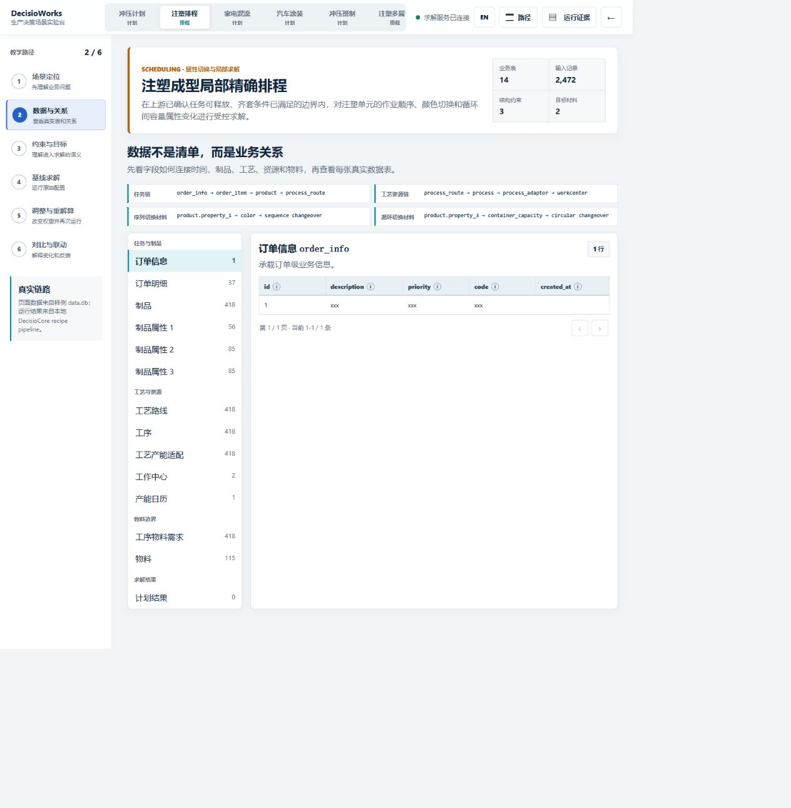
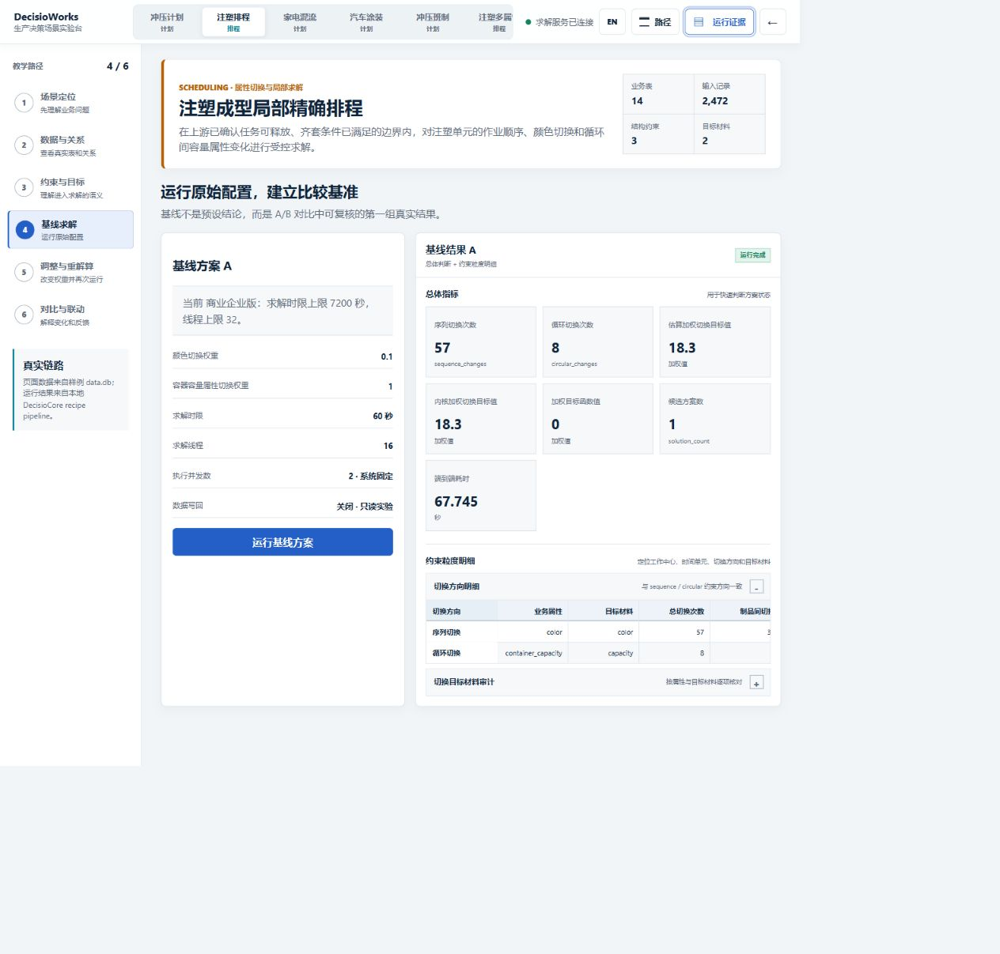
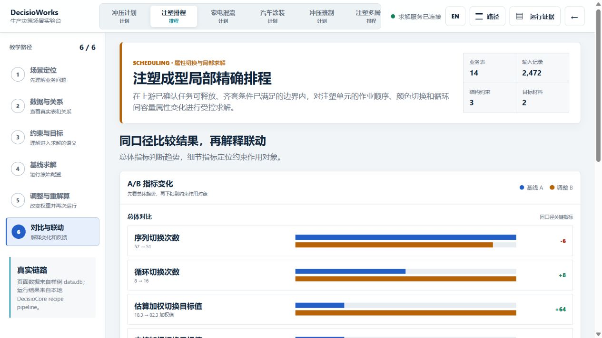

Applies to DecisioWorks v1.4.0
Injection-molding scheduling case: bringing color, cap type, and container capacity into changeover decisions
This case uses InjectionMoldingWorkshop/data.db and the
production_scheduling orchestration recipe to show how
product properties influence cyclic scheduling and changeover
trade-offs. The sample inspected on 2026-08-31 contained 37 demand
lines, 2 work centers, 115 materials, 418 process adaptors, and 120
existing result rows. Its database integrity check passed. The existing
rows are historical records in the input file and should be
distinguished from newly generated results.
The recipe maps standard property slots to color, cap type, and container capacity. Capacity here means the product's container capacity, not equipment capacity. This keeps the model connected to business meaning instead of guessing meaning from storage positions.
The circular-sequence configuration enables capacity, demand, inventory, sequence-changeover, and circular-changeover constraints. Adjacent tasks use color for sequence changeovers; reused-capacity cycles use container capacity for circular state changes. Preprocessing validates integer fields and batch multiples before solving.
The reference configuration uses work center 2, sequence length 40, three cycles, objective weights color 0.1 and capacity 1, and a request of 16 threads for 60 seconds. These are sample settings, not universal injection-molding recommendations.
Acceptance goes beyond the existence of a sequence.
| Output | How to read it | Acceptance question |
|---|---|---|
| Schedule sequence | Tasks by work center and cycle | Are scope and sequence length correct? |
| Demand coverage | Compare all 37 demand lines | Are any tasks missing or duplicated? |
| Sequence changeover | Count adjacent color changes | What was sacrificed to reduce changes? |
| Circular changeover | Inspect container-capacity state across cycle boundaries | Do reused cycles connect consistently? |
| Batch audit | Compare rate and demand multiples | Did preprocessing catch inconsistency? |
| Objective-material audit | Verify color and capacity direction | Did configured weights enter solving correctly? |
For a rerun, change only a small number of color/capacity weights, sequence length, or cycle-count settings.
The following records come from DecisioWorks v1.4.0 Commercial
Edition runs under an Enterprise license on 2026-08-31.
Both API runs used 16 threads with a 60-second solve limit and returned
ok, one valid candidate, 120 newly generated result
records, 12 action events, and no errors. A usable solution is not proof
of global optimality. The baseline completed in 66.57 seconds and the
adjusted run in 66.50 seconds. These elapsed values include Web API
processing and should not be read as solver-only time.
With color=0.1 and capacity=1.0, the
baseline analysis reported 41 sequence changes, 6 circular changes, and
a weighted changeover cost of 14.9. With color=0.8 and
capacity=1.5, the adjusted run reported 46 sequence
changes, 14 circular changes, and a weighted cost of 66.4. Direction
audits passed in both runs, and the analysis values matched the GOCK
objective-material values.
Both changeover counts increased after the adjustment, so these records do not show that higher weights reduce changeovers. The two weighted costs also use different weights and should not be compared directly to rank solution quality. Objective calculations include model-specific terms and empty-state transitions; multiplying the displayed counts by the weights will not necessarily reproduce them. Review task sequences, constraint satisfaction, and actual changeover costs before accepting the adjusted solution.



In this sample environment, the UI run did not succeed with two threads, while both baseline and adjusted runs completed with the dataset default of 16 threads. When reproducing the sample, record thread count, time limit, data version, and constraint settings together. This observation does not establish 16 threads as a universal minimum or guarantee the same result in another environment.
The API evidence and UI screenshots come from separate real executions. Parallel search can return different feasible sequences, so the screenshot counts are not expected to match the API summary item by item. Each A/B comparison is evaluated only within its own execution environment and parameter baseline.